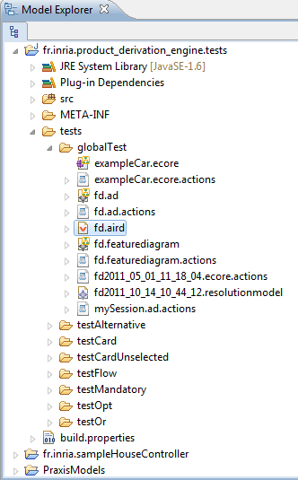
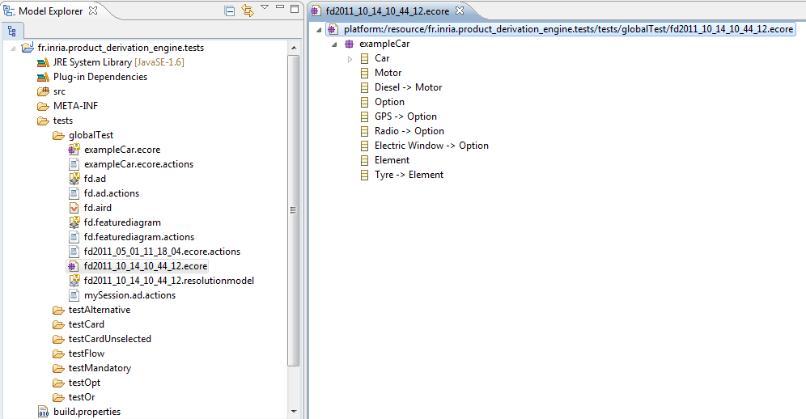

We have obtained a new resolution model in the last section. So, we use it with the Product Derivation Engine. To start with, we add it on the Obeo Designer session : right click on the Obeo Designer session (here fd.aird) -> Add Model. A new wizard appears, select Add Existing Resource -> Finish. Then click to Browse Workspace to search and select the resolution model.

Then right click on the resolution model file Movida -> Derive Product.
We obtain the following resolved model :

We have derived a car model with a diesel motor, a GPS, a radio and with electric windows.